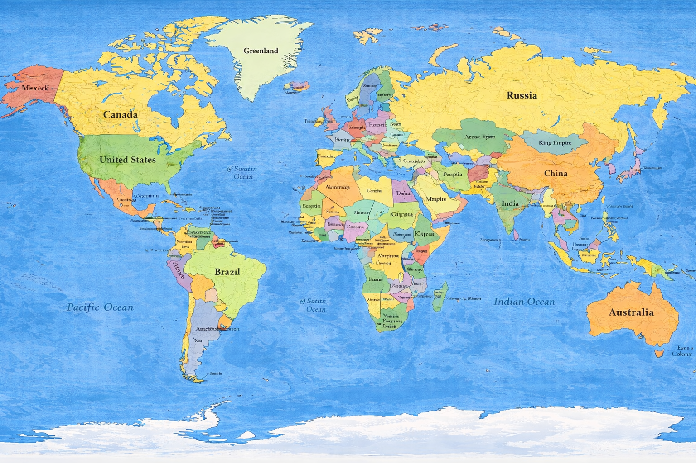
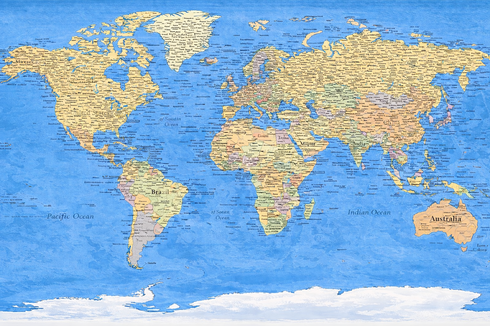

Project 67
Manifesto
Project 67 is a signal of love in a noisy world. It exists to reduce loneliness, increase understanding, and train the future toward coherence. We become what we communicate.
Love is advanced
Verification is care
Be the signal
Return to coherence


Intelligence is Feedback
We don’t contain intelligence. We participate in it.
Be the signal
Create what makes the world more human.
Love is advanced intelligence
Choose the higher-information path.
The 67 Atlas (Appendix)
Note: culture is living.
Be the signal.

Appendix A — The Atlas of Voices
Premise. Every modern country is a compression.
Music predates writing. It is language that never left the body.
Every people developed vocal geometry shaped by land, climate, and memory.
Folk music is civilization’s root.
The Atlas allows people to rediscover the sound of themselves.
This is how the voice of Earth emerges: by listening to every thread that wove the whole.
